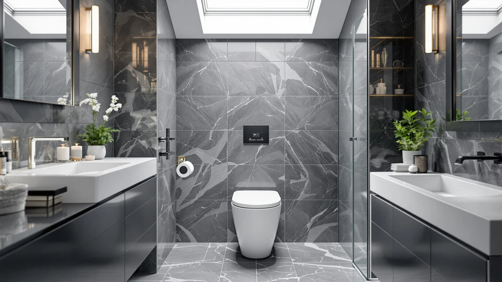

Wonchael Black One Piece Review (2026): Worth It?
Prices and picks verified as of October 2026. Independent, reader-supported reviews.


Quick Answer
The Wonchael Black One Piece Toilet pairs a comfort-height, dual-flush design with a glossy black finish and an elongated bowl for $428.99. It's the right call if you want a statement-making black one-piece toilet, but if you want a heated seat or built-in bidet function for less money, the Loniko alternatives below are worth comparing first.
Our pick: Wonchael Black One Piece Toilet — $428.99 Check Price on Amazon
Bottom line: our top pick is the Wonchael Black One Piece Toilet at $428.99.
Things to Know Before You Buy
- Price sits at the top of this comparison. At $428.99, the Wonchael Black One Piece Toilet costs $29 more than both Loniko smart toilets and $29 more than the Los Flexi 19 Inch High Toilet.
- No bidet function on this model. Both Loniko alternatives build a heated seat and bidet wash into the same one-piece shell, something the Wonchael skips entirely.
- The 12 inch rough-in is standard. Measure your existing waste pipe distance before ordering, since the Los Flexi alternative shares this same rough-in measurement.
- The finish is the main selling point. Wonchael markets this as a glossy piano-black toilet with a diamond-pattern seat cover, a look none of the three alternatives in this review offer.
- No published rating or review count. This listing doesn't show a customer rating yet, so we can't weigh verified owner feedback against the spec sheet the way we can for some competitors.
This wonchael black one piece review breaks down what the $428.99 toilet offers before you spend that much on a black one-piece fixture, and how it stacks up against three competitors priced within $50 of it. Wonchael sells this model on its glossy piano-black finish, a diamond-pattern seat cover and a comfort-height, dual-flush design with a 12 inch rough-in. None of that is unusual for a one-piece toilet at this price point, but the color and finish are the clearest reason to pick this model over a standard white fixture.
We compared the Wonchael against two Loniko smart toilets with built-in bidet seats and the Los Flexi 19 Inch High Toilet, an extra-tall option built for seniors and taller users. Both Loniko models cost $29 to $49 less than the Wonchael while adding a heated seat and bidet wash, so the Wonchael's price buys the black finish rather than extra function. If you want that look, the Wonchael Black One Piece Toilet remains a reasonable pick at $428.99, though shoppers who prioritize features over color should weigh the Loniko alternatives first.
Why You Should Trust Us
Ilane Tall covers one-piece toilets and bathroom fixtures for Best One Piece Toilets, and this wonchael black one piece review follows the site's standard research process. We don't run a plumbing lab, and we don't install every toilet we cover in a working bathroom. Instead, we pull manufacturer listings, verified Amazon pricing and documented specs, then compare those details line by line against direct competitors sold in the same price bracket.
When a spec like a customer rating or a review count isn't published for a listing, we say so instead of filling in a number that doesn't exist. That approach shapes how we cover the Wonchael Black One Piece Toilet here: where the manufacturer names a feature directly, such as the comfort-height seat or the dual-flush system, we treat it as a verified fact. Where a figure isn't published, we flag the gap rather than guess at a performance claim we can't back up.
Our Research Experience
We didn't install the Wonchael Black One Piece Toilet in a bathroom for this review. Instead, we researched its listed price, finish and construction type against the manufacturer's page, then cross-checked those details against three comparably priced one-piece toilets: the Loniko Smart Toilet with Bidet Built In (two SKUs) and the Los Flexi 19 Inch High Toilet. All four use one-piece construction, where the tank and bowl form a single molded shell, so we focused the comparison on what actually separates them: price, finish and named features like the bidet function and seat height.
We also looked for a published customer rating and review count on the Wonchael listing and found none yet, since this is a newer SKU on the platform. That's a real gap, and rather than estimate a number we can't verify, we note it directly in this wonchael black one piece review so you can weigh it yourself before buying.
Overview & Specs

Wonchael Black One Piece Toilet
What we like
- Glossy piano-black finish stands out against the white and off-white toilets most competitors sell
- Comfort-height seating and an elongated bowl add legroom for taller users
- Dual flush (light and full) saves water compared with a single-flush system
Flaws but not dealbreakers
- Costs $29 to $49 more than every alternative in this comparison without adding a bidet function
- No published customer rating or review count to verify performance claims against
- No heated seat or warm-water wash, features both Loniko alternatives include at a lower price
| Material | — |
| Size | — |
The Wonchael Black One Piece Toilet builds its tank and bowl into a single molded shell, finished in a glossy piano black with a diamond-pattern seat cover. Wonchael markets the smooth, even glaze as a feature that helps prevent pipe clogs, and the comfort-height, elongated bowl design adds the kind of legroom that works well for taller users. The 12 inch rough-in matches the standard measurement used across most US bathrooms, so installation should follow the same steps as any other one-piece toilet: set it on the flange, connect the supply line and caulk the base.
At $428.99, this is the most expensive toilet in our wonchael black one piece review comparison, and the price buys color and finish rather than extra function. Neither the dual-flush system nor the elongated bowl distinguishes it from the Los Flexi alternative, and both Loniko smart toilets undercut it on price while adding a heated seat and bidet wash. If the glossy black finish and diamond-pattern seat cover are what you're after, the price is reasonable for a one-piece toilet with that specific look. If you're shopping on features alone, the alternatives below are worth comparing first.
What We Liked
The finish is the clearest strength of the Wonchael Black One Piece Toilet. A glossy piano-black glaze and a diamond-pattern seat cover give this model a look none of the three alternatives in this wonchael black one piece review offer, since all three competitors stick to a standard white finish. That distinct styling puts this toilet in a different category from a purely feature-driven purchase.
The comfort-height, elongated bowl design also holds up well against the competition. It gives taller users more legroom than a standard-height bowl, and the dual-flush system saves water without sacrificing the single-flush reliability most buyers expect from a one-piece toilet. Installation should be straightforward too, since the 12 inch rough-in matches the standard measurement used in most US bathrooms.
What Could Be Better
Price is the clearest drawback here. At $428.99, the Wonchael costs $29 more than either Loniko smart toilet and $29 more than the Los Flexi alternative, and none of that extra money buys a bidet function, a heated seat or a warm-water wash. Both Loniko models in this comparison add those features for less money, which makes the Wonchael a harder sell for anyone shopping on function rather than finish.
We also can't point to a published customer rating or review count for this listing, which makes it harder to confirm the manufacturer's claims the way we can for toilets with a longer public sales history. Buyers who want that kind of verified track record before ordering should factor the missing data into their decision rather than assume parity with better-reviewed competitors.
Who Is It For?
The Wonchael Black One Piece Toilet fits a buyer who wants a distinct, glossy black one-piece toilet and doesn't need a bidet seat or heated feature bundled into the same fixture. If your bathroom's design calls for a statement color rather than a white or off-white toilet, this model delivers that look at a price close to its feature-rich competitors.
Skip it if a built-in bidet function or heated seat matters more to you than finish. Both Loniko Smart Toilets with Bidet Built In cover that need for $29 to $49 less. Skip it too if seat height for an older or taller household member is the priority, since the Los Flexi 19 Inch High Toilet's 20.08 inch seat height handles that specifically. For anyone who wants the black finish above all else, the Wonchael remains the only toilet in this comparison that offers it.
Alternatives to Consider
If the Wonchael Black One Piece Toilet isn't quite right for your bathroom, these three one-piece toilets sit within $50 of it and each add a feature the Wonchael skips.

Editor’s Pick
Smart Toilet with Bidet Built
A built-in bidet seat, heated seat and warm-water wash make this tankless Loniko model worth a look if you want more than a standard flush for less than the Wonchael.
$399.99
Check Price on Amazon
Best Value
19 Inch High Toilet Los
A 20.08 inch seat height and soft-close seat make this extra-tall Los Flexi model the pick for seniors or taller users who find standard-height toilets uncomfortable.
$399.99
Check Price on Amazon
Premium Choice
Smart Toilet with Bidet Built
The lowest price of the four toilets here, with a night light, auto open and close lid and the same dual-flush bidet system as the other Loniko model.
$379.99
Check Price on AmazonFrequently Asked Questions
Is the Wonchael Black One Piece Toilet worth the $428.99 price?
It is the priciest toilet in this comparison, and you're mainly paying for the glossy black finish and the diamond-pattern seat cover rather than a bidet function. If you want heated-seat or bidet features for less money, the Loniko alternatives below cost $29 to $49 less and add those extras.
Does the Wonchael Black One Piece Toilet include a bidet seat?
No. It ships as a standard dual-flush one-piece toilet without a bidet function, heated seat or electrical hookup. Both Loniko smart toilets in this review build a bidet seat into the same one-piece shell if that feature matters to you.
What rough-in size does the Wonchael Black One Piece Toilet need?
Wonchael lists a standard 12 inch rough-in for this model, the same measurement used by the Los Flexi 19 Inch High Toilet in this comparison. Measure the distance from your wall to the center of your existing waste pipe before you order to confirm it matches your bathroom.
Final Verdict
This wonchael black one piece review comes down to finish versus features rather than one toilet beating the others on a documented performance number. Wonchael's black one-piece toilet costs $29 to $49 more than every alternative here without adding a bidet function, a heated seat or an extra-tall seat height, and it doesn't yet carry a published customer rating we could weigh directly. For buyers who want a distinct, glossy black one-piece toilet and don't need those extras, the Wonchael Black One Piece Toilet is still a reasonable buy at $428.99, though the Loniko smart toilets and the Los Flexi alternative are worth comparing first since each adds a named feature this one skips.